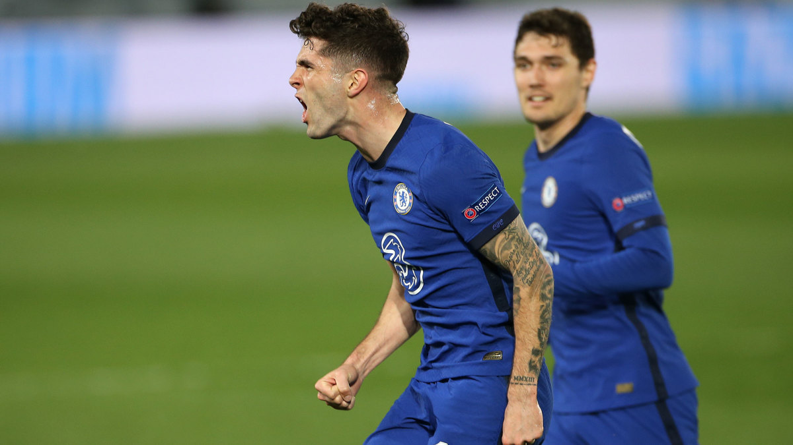
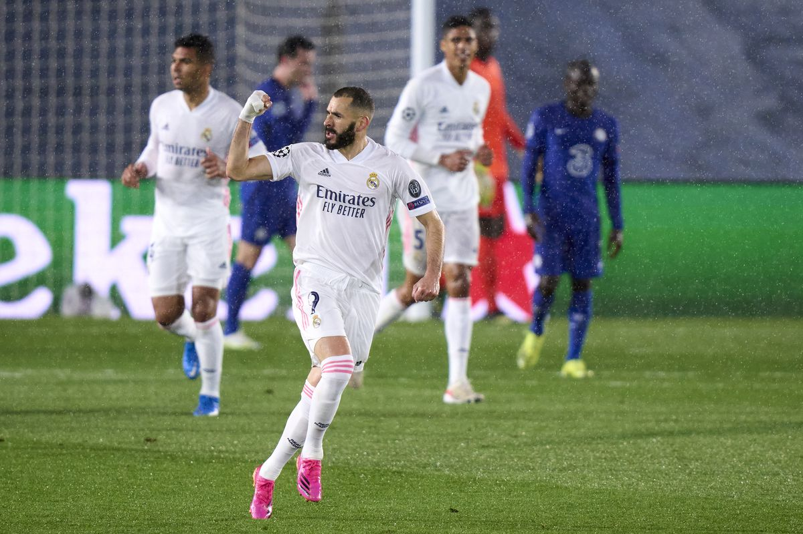

Final Score: Real Madrid 1-1 Chelsea
The first leg of this Champions League semifinal was a tight affair between two fairly evenly-matched teams. Both teams came into this one in good form, with Chelsea having lost just two games since January and Real Madrid having lost none in that stretch. Both teams have been very good defensively recently, so it was going to take something spectacular to break the tie open. Unfortunately for both teams, that breakthrough never came. Here are five key takeaways from the match:
1. Zidane Comes With A Solid Gameplan...
Chelsea have been at their best under Tuchel when they are dominating the ball and controlling the game. It’s the reason their defense has done so well since he was brought in, and the possession-based approach is one that suits a lot of their players in midfield and defense. To counter this, Zidane came into this game wanting his Real Madrid team to dominate the ball, not putting too much emphasis on creating chances. It’s a tactic that a lot of teams will pull in the first leg of two-game ties, especially if they are at home as a 0-0 would see them go through on away goals even with a draw in the second leg. The plan worked well until Christian Pulisic was able to break through the Real Madrid defense with a fantastic play to create a goal for himself. Real Madrid was able to equalize a little bit later with an excellent finish from Karim Benzema, but they struggled to create much for the rest of the game. Zidane flipped the script in the second half by having his team sit off and counter, forcing Chelsea to try and break them down. While the switch worked from a defensive standpoint, it was not very useful in creating good chances and the second half turned into a stalemate.
2. ...But Tuchel Counters It Well
From the look of his lineup selection, it seems Tuchel was expecting Real Madrid to try and control the ball for much of the game. His personnel choices looked to be good options for playing on the counterattack with Pulisic and Timo Werner playing as a front two and Mason Mount dropping deeper into midfield than usual. The approach was able to create a couple high quality chances early on — one which found a wide open Werner a few yards out that he couldn’t finish and the goal which came from a stellar move to get by Courtois from Pulisic. But once Real Madrid switched up their approach, many of the players Tuchel originally selected found trouble making a difference when dominating possession. Some switches just after the hour mark helped a bit, but Chelsea struggled to create opportunities against Real Madrid’s deeper-lying block. Zidane and Tuchel ended up cancelling each other out which led to a lack of explosive moments.
3. Pulisic Continues His Good Form
By finding the back of the net, Christian Pulisic made it four goals in his last six starts. Despite not getting a ton of minutes early in Thomas Tuchel’s reign, Christian Pulisic has turned into Chelsea’s talisman once again. After returning from the international break, Pulisic has been on fire. He looks healthy, he looks confident, and he’s starting to find the final ball that we saw from his post-lockdown last season. He is going to be the go-to player for Chelsea down the stretch this season, but if he can continue the great form he’s had of late then the Blues should have no trouble locking up a spot in the top four and might be able to go the distance in the Champions League.

4. Benzema Continues To Be Real Madrid’s Difference Maker
Karim Benzema has had a stellar season for Real Madrid. If the team were any better this year, he would no doubt be getting some buzz for the Ballon D’or. He has been a huge part of Madrid’s chance creation, buildup, and goalscoring (having a hand in 50% of their goals this season). He was able to get on the scoresheet once again today with a fantastic volley, and he’d be a good bet to get another one in the second leg. However, if Real Madrid want to keep their hopes of a La Liga-Champions League double alive, they need to give him some help. As of right now, Madrid’s offense looks very one dimensional, and Chelsea was able to shut them down with some very controlled pressing. A healthy Eden Hazard could help, but the whole team needs to pull their weight in case of an off game (or an injury/suspension) from Benzema.

5. The Second Leg Could Go Either Way
I really don’t know who to take in the second leg of this tie. It’s likely going to go the same way as this game because the teams seem so evenly-matched. It will probably come down to some individual talent allowing one team to find a breakthrough, but I couldn’t tell you who that was going to come from. I’ll take Chelsea because they are currently more healthy and a more known quantity for me (I watch way more Chelsea than Real Madrid), but I could easily see either team going through to the final.